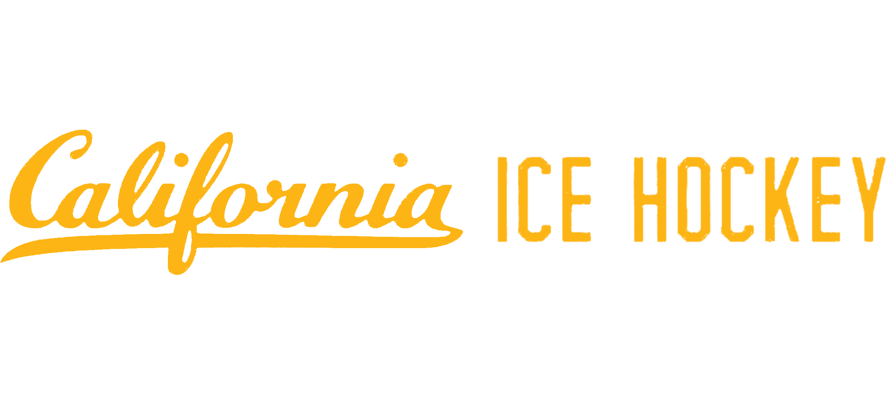

Follow Us:

California Ice Hockey is joining forces with the San Jose Sharks for a College Hockey Clinic at the Oakland Ice Center on September 19, giving young players the chance to spend a day on the ice alongside college club players and the Sharks organization.
Hosted by the San Jose Sharks Youth Hockey and Fan Development team, the clinic is built for players ages 8–14 and packed into one high-energy day. The schedule features skills clinics, fun on-ice challenges, and interactive sessions, all led by rostered players from one of California's premier college hockey clubs — California Ice Hockey.
For the Golden Bears, the event is a chance to give back to the community that surrounds their home rink. The Oakland Ice Center has been Cal's home ice for years, and this clinic puts current college players on the same sheet as the next generation of local skaters, passing along the habits and love of the game that carried them to the college level.
The day is designed to meet young players wherever they are in their development. Newer skaters get a welcoming introduction to the fundamentals, while more experienced players are pushed with drills and challenges that keep the pace up and the competition fun. Throughout the day, the Cal players work directly with participants — offering pointers, running stations, and showing that college hockey is an attainable goal worth chasing.
It is also a rare opportunity for kids to connect with players from both a professional organization and a college program in the same session, the kind of experience that tends to stick with a young athlete long after the ice is resurfaced.
Date: September 19, 2026
Location: Oakland Ice Center, 519 18th Street, Oakland, CA
Ages: 8–14
Questions? Reach out to the Sharks Youth Hockey team at YouthHockey@SJSharks.com.
By California Ice Hockey